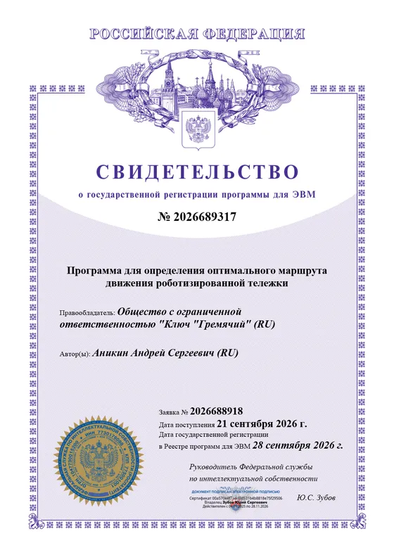
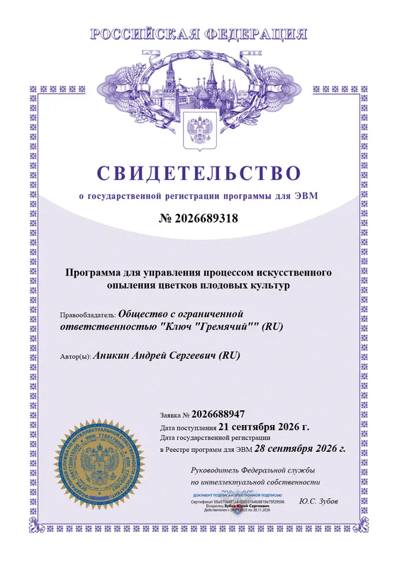
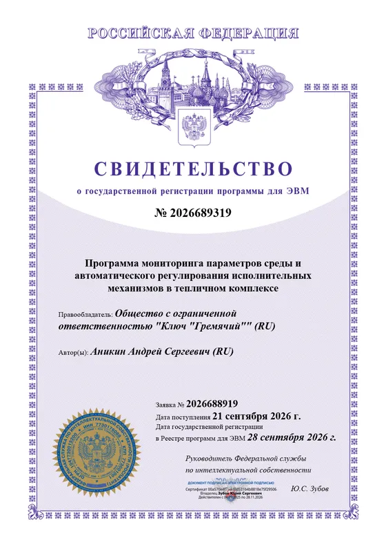
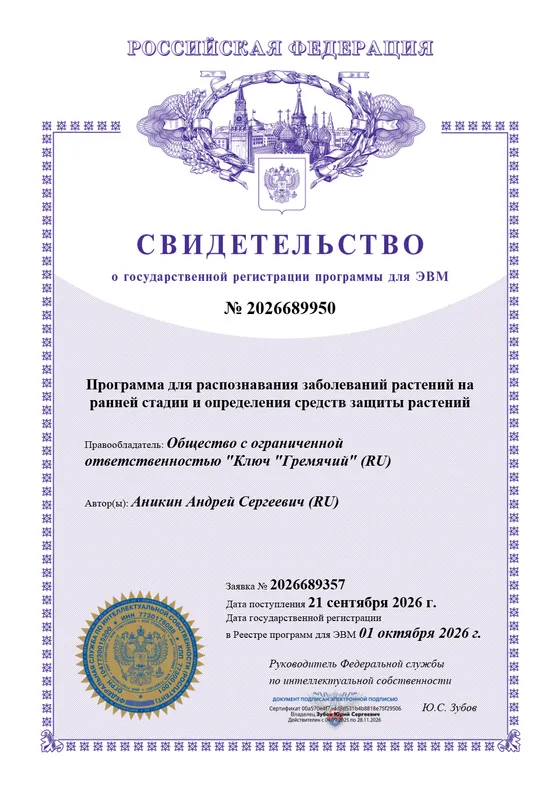
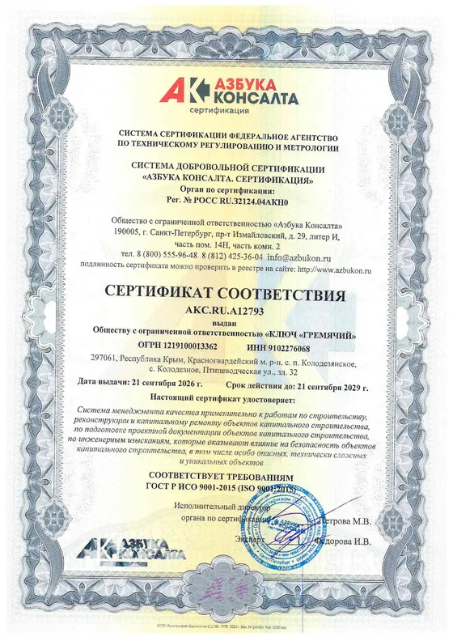

Сбор урожая
Распознаёт плод и плодоножку в объёме, оценивает спелость и свободное место, рассчитывает точку среза. Робот подводит ловитель, срезает плод и проверяет результат.
Собственная разработкаАгроробототехника · Республика Крым
Разрабатываем роботов под конкретные агротехнические операции — от опыления цветков до сбора урожая. Строим теплицы с роботом на рельсах и проектируем сады, в которых технике удобно работать.
Направления разработки
Под каждую операцию — своя программа управления. Всего их десять, шесть уже зарегистрированы в Реестре программ для ЭВМ Роспатента. Средства защиты и нормы удобрений программы за агронома не назначают: они показывают, где и что нужно проверить.
Распознаёт плод и плодоножку в объёме, оценивает спелость и свободное место, рассчитывает точку среза. Робот подводит ловитель, срезает плод и проверяет результат.
Собственная разработкаНаходит избыточные побеги плодовых деревьев и кустарников: учитывает направление роста, пересечения, болезни и плодоношение. Решает, что срезать, что оставить, а что показать человеку.
Собственная разработкаОбрабатывает места среза после обрезки: дозирует жидкость по диаметру среза, следит за давлением и форсункой и не обрабатывает один срез дважды.
Свидетельство № 2026690114Выбирает раскрытые и готовые к опылению цветки, проверяет условия среды и не возвращается к уже обработанным. Задаёт очерёдность операций.
Свидетельство № 2026689318Замечает ранние признаки заболеваний и следит, как меняются симптомы. Подсказывает, какие растения осмотреть первыми и какие меры защиты рассмотреть.
Свидетельство № 2026689950Распознаёт вредоносных насекомых и считает плотность заселения. Решает: понаблюдать ещё, продолжить мониторинг или пора проводить защитное мероприятие.
Собственная разработкаСводит в общий индекс крону, окраску листьев, влажность у корней, нагрузку плодами и риски болезней. Даёт список нужных проверок по каждому растению и по участку.
Свидетельство № 2026689951Разбирает pH, азот, фосфор, калий, влажность и засоленность, считает дефицит относительно целевых значений и сводит пробы по участку.
Собственная разработкаСтроит маршрут по карте тепличного комплекса: объезжает препятствия с учётом габаритов робота, сокращает число поворотов и выбирает выгодный порядок обхода точек.
Свидетельство № 2026689317Следит за температурой, влажностью, CO₂ и освещённостью, управляет отоплением, вентиляцией, увлажнением, подачей CO₂ и досветкой. При открытой вентиляции CO₂ не подаёт.
Свидетельство № 2026689319Робот под культуру
У лимона, яблони и черешни разные схемы посадки, высота кроны и уязвимые места. Поэтому робот собирается из модулей: его можно перенастроить под другую культуру и другую операцию — обрезку, обработку, сбор урожая.
Рассказать о своей задачеРельсовая система в теплице или ходовая часть под междурядья сада. Маршрут строится с учётом препятствий и плотности посадок.
Камеры и нейросети распознают плоды, зрелость, побеги, признаки болезней и вредителей. Датчики собирают данные о микроклимате и состоянии растений.
Модуль под операцию: секатор с ловителем плодов, форсунка для обработки срезов, опылитель.
Собственное программное обеспечение с блокировками и аварийным остановом. Агроном видит, что делает робот, и может вмешаться в любой момент.
Теплицы под ключ
Строим многоблочные теплицы по технологии Миттлайдера с роботизированной машиной на рельсовой системе. Робот ухаживает за деревьями и собирает урожай, агроном контролирует процесс и при необходимости корректирует работу систем.
Проект теплицы готовим в том числе под требования грантовых комиссий и банков.
Обсудить теплицуПроектирование садов
Сад закладывают на десятилетия. Мы сразу учитываем, как по нему будут ходить техника и роботы, и готовим проект закладки многолетних насаждений в составе, который нужен для субсидий на закладку и уход. Проектируем и для закрытого грунта — вместе с теплицей.
Состоим в саморегулируемой организации в области инженерных изысканий и подготовки проектной документации (СРО-П-152-30032010).
Заказать проект садаС кем работаем
Когда не хватает рабочих рук на сезонные операции и важно не пропустить начало болезни.
Когда нужно держать микроклимат под контролем без постоянного ручного вмешательства.
Когда сад только планируется: его можно сразу спроектировать под механизацию и подготовить документы для субсидии.
Когда нужно регулярно оценивать состояние большого числа растений.
Как работаем
Культура, площадь, операция, которую нужно автоматизировать, или участок под будущий сад.
Схема посадки, междурядья, рельеф, условия в теплице.
Состав робота и программ, теплица или проект сада — с понятными этапами и сроками.
Адаптируем технику и программы под вашу культуру и условия.
Помогаем на старте работы и дорабатываем по результатам сезона.
Документы
Правообладатель программ — ООО «Ключ «Гремячий». Номера свидетельств можно проверить в открытом Реестре программ для ЭВМ на сайте ФИПС (Роспатент).

№ 2026689317 · 28.09.2026 Определение оптимального маршрута роботизированной тележки
№ 2026689318 · 28.09.2026 Управление искусственным опылением цветков плодовых культур
№ 2026689319 · 28.09.2026 Мониторинг среды и регулирование механизмов в тепличном комплексе
№ 2026689950 · 01.10.2026 Распознавание заболеваний растений на ранней стадии № 2026689951 · 01.10.2026 Оценка состояния растений и потребности в агромероприятиях № 2026690114 · 02.10.2026 Дезинфекция мест среза избыточных побегов плодовых культур
Система менеджмента качества
Подлинность можно проверить в реестре на сайте azbukon.ru.
Открыть сертификат (PDF)Обсудить проект
Опишите культуру, площадь и операцию, которую хотите автоматизировать, или участок под будущий сад. Мы свяжемся с вами и предложим, с чего начать.
ООО «Ключ «Гремячий» · Республика Крым, Красногвардейский район